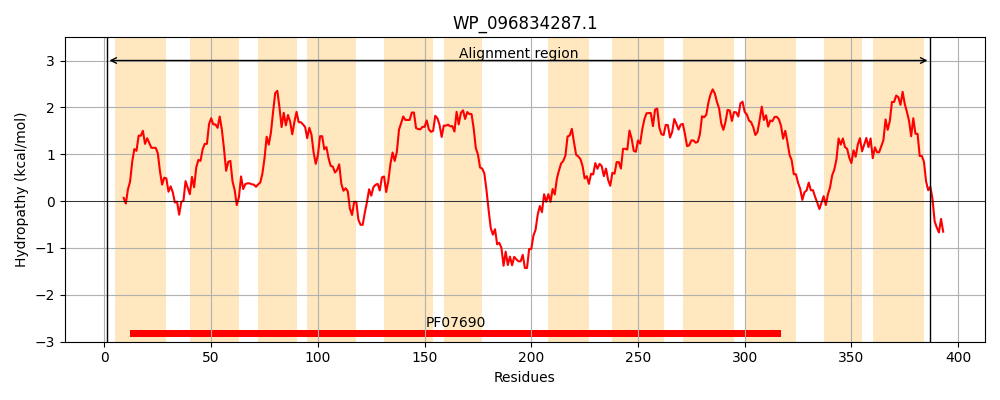
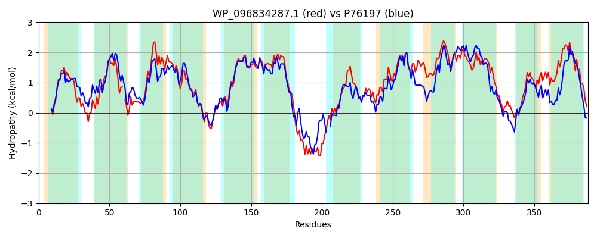

Hit Accession: P76197
Hit TCID: 2.A.1.15.12
Hit Description: gnl|BL_ORD_ID|11446 gnl|TC-DB|P76197|2.A.1.15.12 Inner membrane transport protein ydiM OS=Escherichia coli (strain K12) GN=ydiM PE=1 SV=1
Mach Len: 388
e:0.000000
Query TMS Count : 12
Hit TMS Count: 12
TMS-Overlap Score: 12.650000
Predicted Substrates:CHEBI:62898;isopentenyl alcohol
BLAST Alignment:
Score: 1232 , Bit scores: 479 bits, E-value: 3.1e-169, Alignment length: 388, Percentage identity: 61
Query: 1 MKNKYIPTAAGLYLNYLIHGMGVLLITLNMAHLQEQWGTDAAGVSIVISSLGIGKLATIV-TGFLSDRFGRKPFIYLGILSYLIFFVGILLTKNIYLAYVFGIMAGLANSFLDSGTYPALMESFPHSASRANVLIKAFVSAGQFLLPFIISFLIWANLWFGWSFVIAAGLFVLSGIYLLKMPFPDSQSAKKEEAPTAQAEATARPQANKLDMVIFTLYGYIGMATFYLVSQWLAQYGQFVVGLPYASAIKLLSIYTVGSLVCVFVTASFVKEVFSSAIAMIIYTGLSMISLLLVCLFPTPMMVTGFAFIIGFAAAGGVLQLGATIMAMSFPNGKGKATGIFYTAGSIASFTIPLITAKLSQISIASIMWFDFAIAVIGFVIALYIGYR 387
MKN Y PTA GLY NYL+HGMGVLL++LNMA L+ W T+AAGVSIVISSLGIG+L+ ++ G LSDRFGR+PFI LG+ Y+ FF GIL T NI +AYVFG +AG+ANSFLD+GTYP+LME+FP S AN+LIKAFVS+GQFLLP IIS L+WA LWFGWSF+IAAG+ ++ ++L + FP + + R + +D+ +TLYGYI MATFYLVSQWLAQYGQFV G+ Y +IKLLSIYTVGSL+CVF+TA ++ +++YT +S I+L VCL PT +V FAF+IGF +AGGV+Q+G T+MA FP KGKATGI+Y+AGSIA+FTIPLITA LSQ SIA IMWFD AIA IGF++AL+IG R
Sbjct: 1 MKNPYFPTALGLYFNYLVHGMGVLLMSLNMASLETLWQTNAAGVSIVISSLGIGRLSVLLFAGLLSDRFGRRPFIMLGMCCYMAFFFGILQTNNIIIAYVFGFLAGMANSFLDAGTYPSLMEAFPRSPGTANILIKAFVSSGQFLLPLIISLLVWAELWFGWSFMIAAGIMFINALFLYRCTFPPHPGRRLPVIKKTTSSTEHR--CSIIDLASYTLYGYISMATFYLVSQWLAQYGQFVAGMSYTMSIKLLSIYTVGSLLCVFITAPLIRNTVRPTTLLMLYTFISFIALFTVCLHPTFYVVIIFAFVIGFTSAGGVVQIGLTLMAERFPYAKGKATGIYYSAGSIATFTIPLITAHLSQRSIADIMWFDTAIAAIGFLLALFIGLR 386 | Protein Hydropathy Plots: |
|---|
|  |  |
Pairwise Alignment-Hydropathy Plot:
|
|---|
|  |